Ushiku, Ibaraki: things to do, food and stays
Ushiku · Ibaraki
Ushiku
Highlighted on the Ibaraki map.
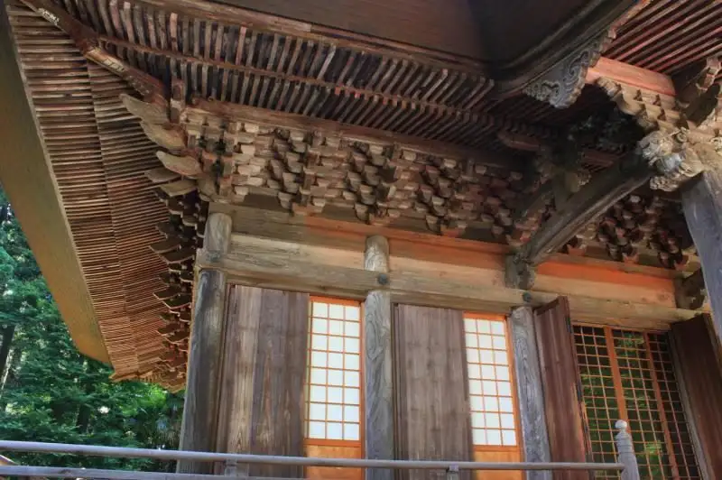
Stay
ライフツリーひたち野うしく
Raifutsuri Hitachi No Ushiku
Inn in Hitachinohigashi, Ushiku with separate bath and toilet.
牛久シティホテル駅前館
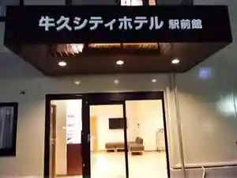
Ushiku City Hotel Ekimae Kan
HOTEL R9 The Yard 牛久
HOTEL R9 The Yard Ushiku
ビジネスホテル・グランディール
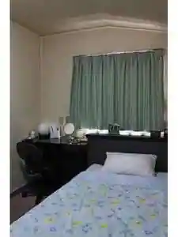
Business Hotel Gurandiru
Hotel in Tamiya, Ushiku with business travelers; 5-minute walk from Ushiku Station.
牛久シティホテル
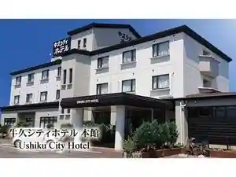
Ushiku City Hotel
牛久シティホテルアネックス
Ushiku City Hotel Anekkusu
Hotel in Ushiku with business travelers.
Dining
ラーメンショップ 牛久結束店
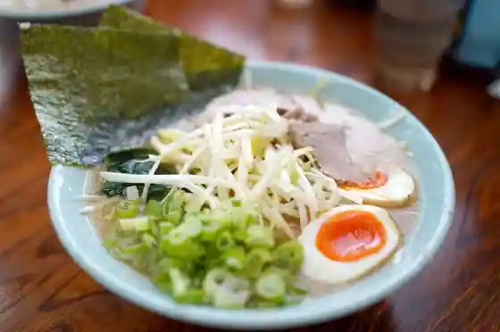
Ramen Shoppu Ushiku Kessoku
季より
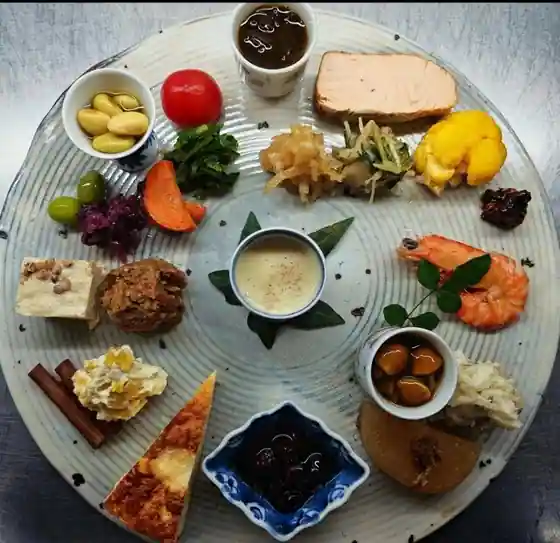
Ki Yori
とん平食堂
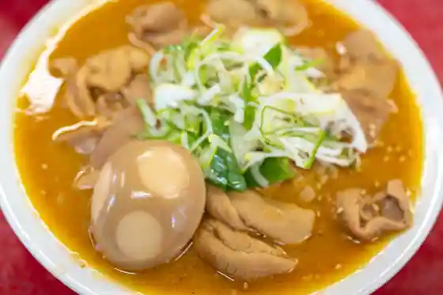
Ton Taira Shokudo
うなぎ やす川
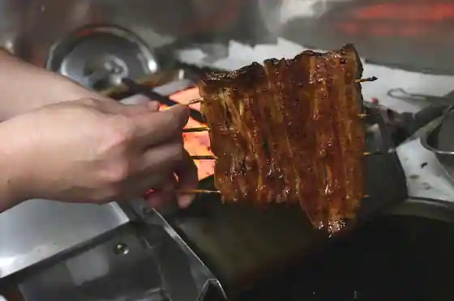
Unagi Yasu Kawa
ラーメンショップ椿 牛久店
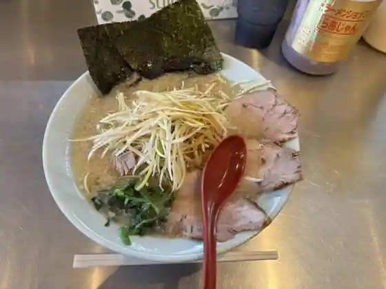
Ramen Shoppu Tsubaki Ushiku
麺匠ことぶき
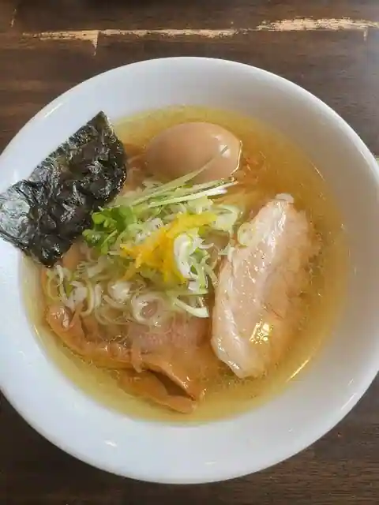
Men Takumi Kotobuki
大勝軒ROSSO
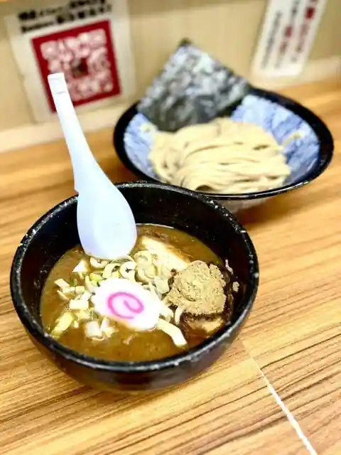
Taisho Ken ROSSO
連根屋
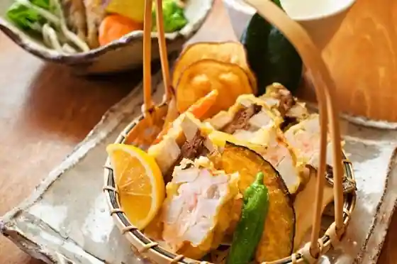
Ren Ne Ya
イルクオーレ ピアットスズキ
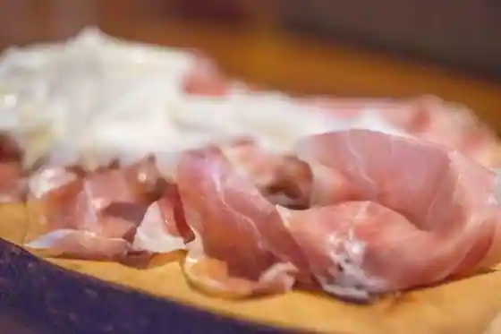
Irukuore Piattosuzuki
りんりん
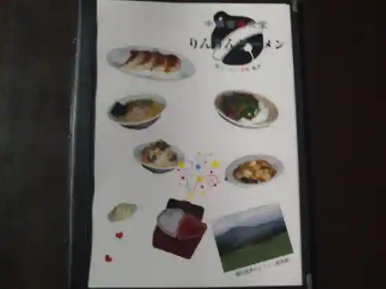
Rinrin
サイトウコーヒー
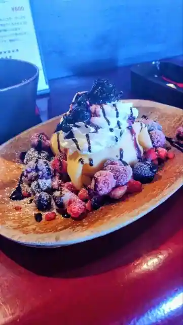
Saitou Coffee
味噌のジョー 牛久店
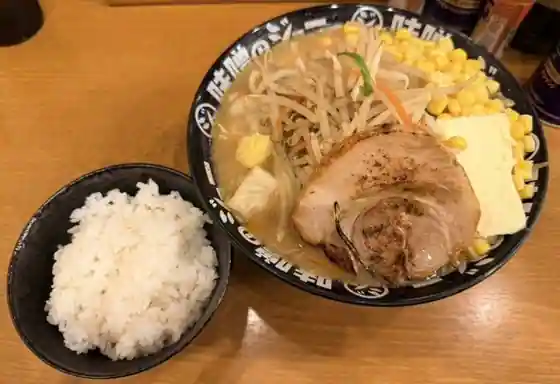
Miso No Jo Ushiku
バラモン太
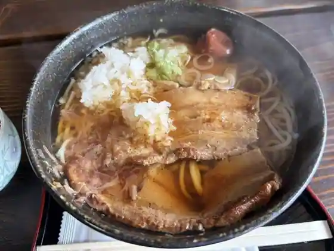
Baramon Ta
DIPIKA
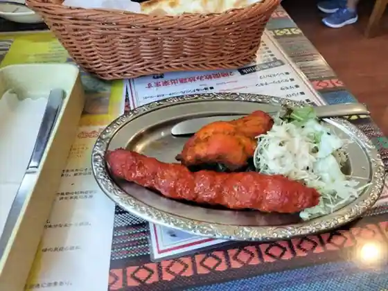
DIPIKA
とんき 牛久店
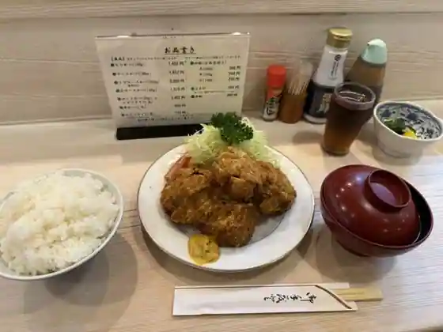
Tonki Ushiku
牛久藩一万十七石
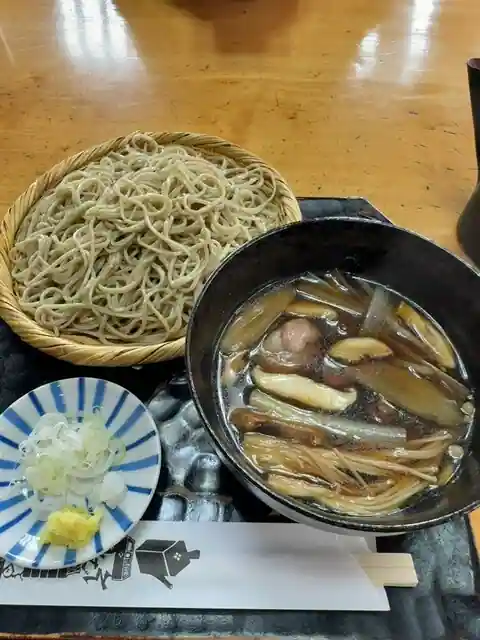
Ushiku Han Ichiman Ju Shichi Ishi
そばの心 志茂部
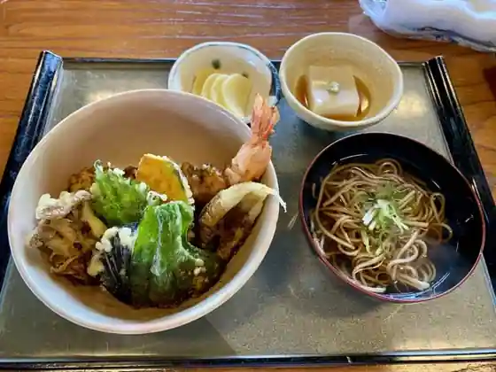
Sobano Kokoro Shimo Bu
牛久シャトー レストラン
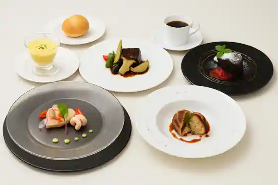
Ushiku Shato Restaurant
かざま
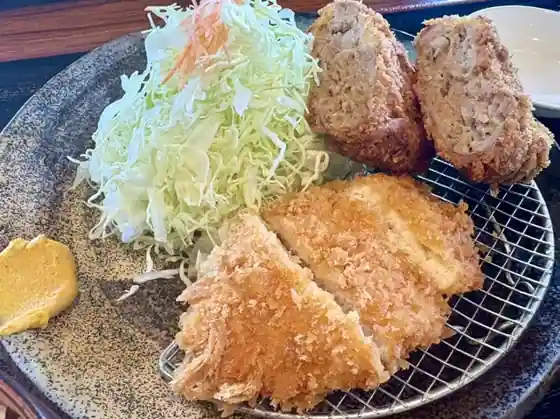
Kazama
オーマイゴッドバーガー
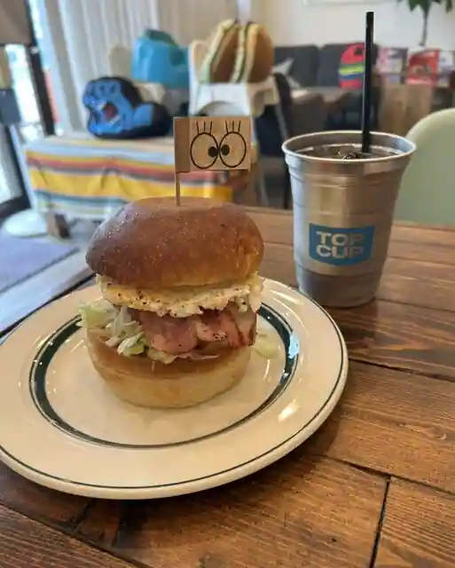
Omaigoddo Burger
グルマン
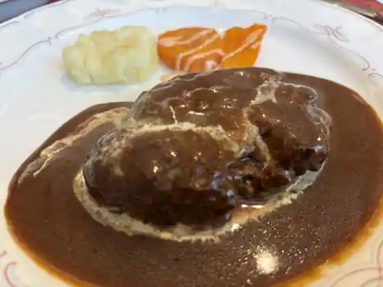
Guruman
森の家庭料理レストラン つくば牛久店
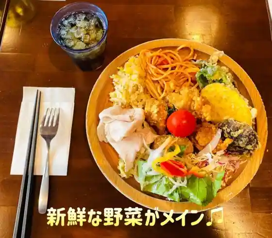
Mori No Kateiryori Restaurant Tsukuba Ushiku
駅うどん 牛久店
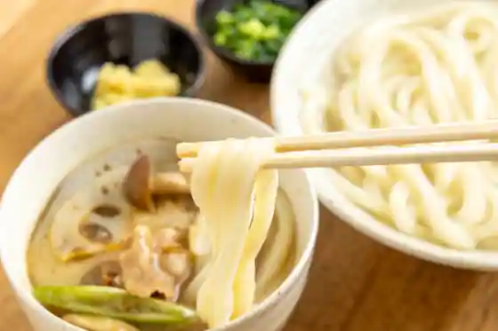
Eki Udon Ushiku
らぁーめん 満帆家
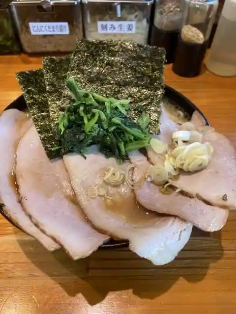
Raamen Manpan Ie
Sights
Ushiku Great Buddha
Ushiku Shato
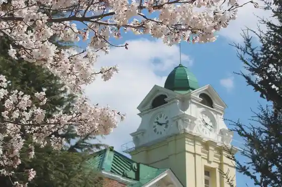
Ushiku Nature Kansatsu Forest
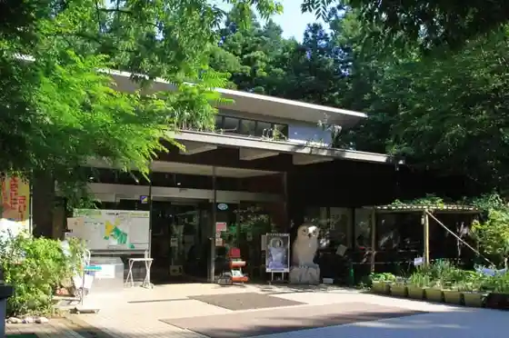
Ogawa Usen Memorial Museum (Kumo Sakana Tei)
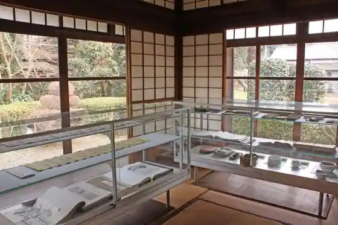
Naganuma Ringo Sono
Pogatto Farm Dokidoki Tsukuba Ushiku Mise
Ushiku Kanko Ayame Sono
Arashi Baths Tsukuba Mise
Kannon Tera
Raifutsurii Hitachi no Ushiku
JA Ryugasaki City JA Ryugasaki City Gekon Nosambutsu Chokubai Tokoro
Soba Tokoro Nagaoka Ya